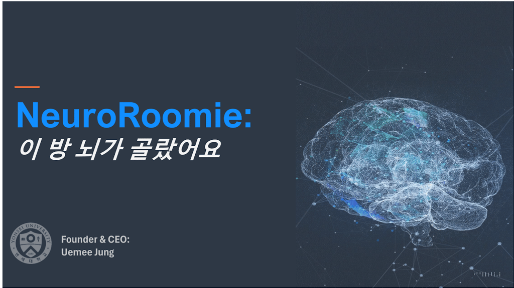
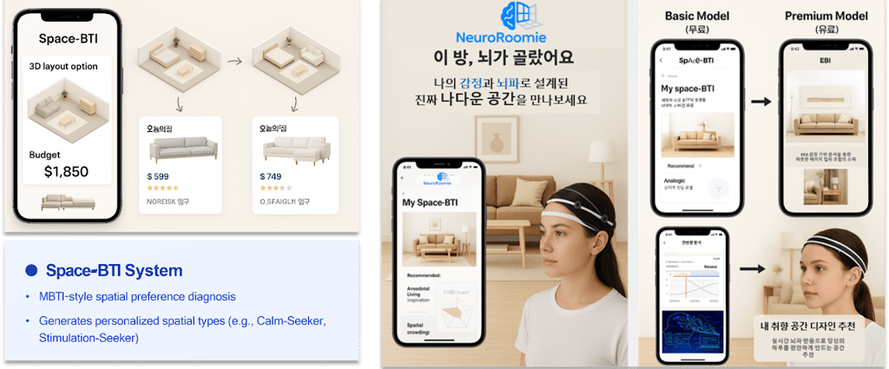

Specializing in neuroarchitecture, EEG-based emotional analysis, and immersive urban space evaluation at the Department of Architecture and Architectural Engineering.
My research explores how the built environment shapes human cognition and emotion by integrating neuroscience, architectural design, and urban informatics.
I was a PhD Visiting Scholar in Experimental Psychology at University College London (UCL), where I collaborated with Prof. Hugo Spiers and PhD candidate Isabelle Sjövall on the NeuroDesign Index (NDIX) experiments.
I also collaborate with Cambridge University and Heatherwick Studio on the Seoul Biennale of Architecture and Urbanism, leading computational studies on façade design and neurophysiology. In parallel, I work with the Korea Institute of Civil Engineering and Building Technology (KICT) to develop EEG- and BCI-based design technologies for smart construction and robotic control.
My academic journey has been supported by the National Research Foundation of Korea (BK21 FOUR), Yonsei University fellowships, and an overseas doctoral research fellowship — aiming to create healthier and more emotionally responsive urban environments.
Laboratory of Architectural and Urban Design
Supervisor: Prof. Dongwook Sohn
Room A602, Engineering Bldg., 50 Yonsei-ro, Seoul
Department of Experimental Psychology
Supervisor: Prof. Hugo Spiers
26 Bedford Way, London
2025 Research Grant Program for Doctoral Students (R&D) · Principal Investigator
Selected as a 2026 ICONS Interdisciplinary Research Scholar
Workstation Scholarship Program (GSIP) · Academic-to-Industry project for MZ generation & single-person households
Workstation Scholarship Program (GSIP)
Selected as a 2025 ICONS Interdisciplinary Research Scholar
Designing and conducting EEG-based neurophysiological experiments — protocol development, data collection, and signal analysis.
BK21 FOUR
Innovative NDIX Space Experiment
Urban Metaverse · XR + EEG · Project Manager
GIS
MAP
NeuroRoomie is a concept project exploring how brainwave (EEG) data and spatial personality profiling (Space-BTI) can be combined to recommend interior layouts and styles.
Each recommendation is tailored to an individual’s emotional state — interior styles, furniture layouts and spatial configurations, optimized by the brain.

NeuroRoomie isn’t just about interiors — it’s about making you feel truly at home: emotionally, cognitively, and physically.
Neuroscience-driven space solutionsMBTI-style Space-BTI questionnaire profiles how a person prefers to live, focus and rest.
Space-BTIReal-time brainwave database (EEG-DB) adds a measured emotional layer to stated preference.
EEG-DBPersonalized interior styles, furniture layouts and spatial configurations.
OutputBuild large-scale user data assets through competitions and bootcamps.
Test market potential, business viability and global scalability.
Interior-commerce API integrations and B2B emotional consulting.

Selected and participated.
Munich, DESelected and participated.
Korea“NeuroRoomie isn’t just about interiors. It’s about making you feel truly at home.”
Ph.D. Candidate · Integrated M.S.–Ph.D. Program in Architecture
Advisor: Prof. Dongwook Sohn
Seoul, KR
Visiting Ph.D. Scholar · Dept. of Experimental Psychology
Advisor: Prof. Hugo Spiers
London, UK
Bachelor of Architecture (B.Arch.)
Dasmariñas, PH
2025 Doctoral Student Research Grant — Analysis of Emotional Responses to Urban Visual Environments and Development of an AI-Based Emotion Prediction Model Using EEG Biosignals
A Comprehensive Computational Exploration of Historical Architectural Façade Patterns and Their Impact on Human Neurophysiology in Seoul
Development of Brain–Computer Interface (BCI)-Based Technologies for Design and Robotic Control — EEG experiment design, protocol development, data collection, signal analysis
The NeuroDesign Index (NDIX): A New Diagnostic Method for Analysing the Impact of Spatial Quality on Human Health, Creative Cognition, and Wellbeing
Research Planning for a BIM-Based Urban Metaverse Evaluation Model Using EEG Measurements
Analysis of Fire Characteristics of Industrial Complexes Using GIS
Development of Regional Fire Risk Spatial Information and Evaluation Mapping
Spatial Strategy Planning
District Unit Planning Techniques for Integrated Urban and Architectural Planning
Cost–Benefit Analysis and Strategies to Promote Green Remodeling of Private Buildings
GIS-Based Analysis of Fire Severity in Relation to Distance from Fire Stations